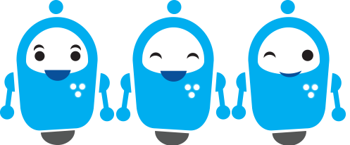
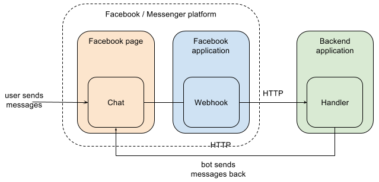

Bots para Social Media.
Tu cultura es tu marca
Created by Jorge Galván- YottaHack / @g3orgx
Sobre Mí
- Estudiante de ISC. en el Tecnológico de Estudios Superiores de Ecatepec.
- Cofundador de la comunidad en internet YottaHack.net.
- Conferencista en FLISOL, Hacking México.
- 5 años de exprencia en Seguridad Informática.
WTF...Bots?
Programas informáticos que pretenden imitar uno o varios comportamientos humanos.
Dumb Bots: Bots que son capaces de responder a situaciones programadas, es decir no saben que hacer frente a una situacion nueva.
Smart Bots: Bot's capaces de adaptarse a nuevas situaciones mediante el uso de servicios cognitivos.
“es el futuro de la comunicación, un arsenal de herramientas y plataformas basadas en internet que aumentan y mejoran el compartir información. Este nuevo medio hace que la transferencia de textos, fotografías, audio, video e información en general, fluya entre los usuarios e internet. El social media tiene relevancia no solo entre los usuarios regulares de internet, sino en los negocios.” merca2.0

Chatbots
Programa de computo diseñado para mantener una conversación con los seres humanos, especialmente mediante internet.
¿Dónde hay chatbots?
- Redes Sociales (Messenger,Telegram,Skype)
- Paginas corporativas (Santander,Volaris,etc)
- Aplicaciones móviles(Simi-Simi)
¿Cómo puede un Chatbot impulsar mi negocio?
- Automatizando procedimientos(ventas,cobros,información).
- Brindando prescencia en internet.
- Abarcando mas mercado(Si yo atiendo 1 cliente cada 5min, el chatbot atiende 10 en un min.).
- Prescindiendo de mi.
Por qué apostar por la plataforma de Messenger?
- 900 millones de personas usan Messenger
- Facebook tiene 1600 millones de usuarios activos
- La ventaja de Facebook es la escala.
- Los bots son mas baratos y rápidos de construir que una aplicación móvil,

- Basado en el motor V8 de Javascript de Google.
- Es una teconología de E/S orientada a eventos.
- Es asincrona.
- Es muy rápida
¿Qué vamos a hacer hoy?
- Desarrollar un Dumbot para Facebook Messenger
¿Qúe necesitamos?
- NodeJs.
- Editor de Texto.
- Ngrok.
- Página de Fb.
primer bot
- Bostify
- Cuenta de Facebook
Segundo bot
Esquema de conexión
Conexión con FB
if(req.query['hub.verify_token']=== conf.FACEBOOK_TOKEN){
res.send(req.query['hub.challenge']);
}else{
res.send('Acceso no autorizado');
}
Contacto
- Email: g3orgx@gmail.com
- YottaHack.net.
- Twitter: @G3orgx
- Fb: Jorge Galván